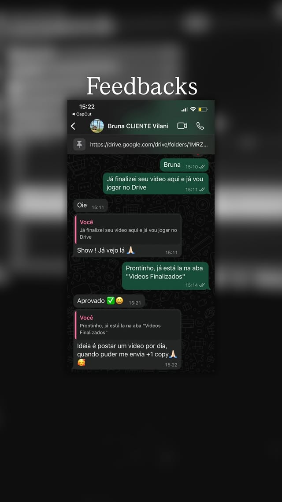
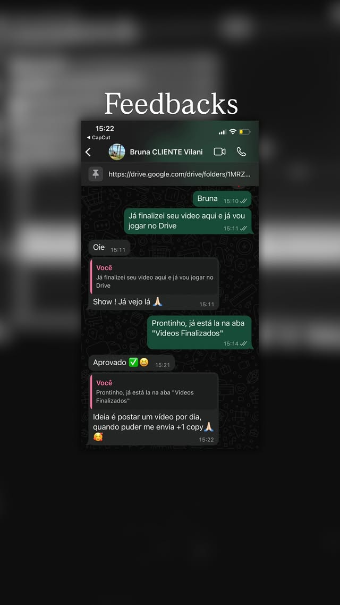

Gustavo Vitor
Engaje com vídeos profissionais
Cortes rápidos, transições fluidas e uma narrativa que prende — tudo pensado para aumentar alcance e conversão nas redes.
Efeitos Visuais de Impacto
Transições suaves, correção de cor e efeitos que prendem a atenção .
Criação de Identidade Visual
Paleta, ritmo e estilo únicos que destacam sua marca em qualquer tela.
Posta todo dia e ainda assim não cresce?
O Problema Está na Edição.
Sem edição estratégica e storytelling certo, seu vídeo vira só mais um no feed — e não a vitrine que atrai e converte seguidores em clientes.
PRÓXIMO NÍVEL
Vídeo amador não prende atenção. O seu público quer profissionalismo.
Chega de postar sem propósito. É hora de fazer cada vídeo vender por você.
Fazer Orçamento
Performance
Soluções completas para negócios que buscam alta performance.
Transforme suas ideias em vídeos que comunicam, engajam e vendem. Oferecemos edições profissionais que unem criatividade, ritmo e estratégia para destacar sua marca e entregar resultados reais.
Vídeos que param o scroll e geram vendas
Produzimos edições que chamam atenção, despertam emoção e convertem. Da primeira cena ao último frame, tudo é pensado para vender.
Roteiros que contam histórias e vendem com propósito
Unimos storytelling e persuasão para criar narrativas autênticas que conectam sua marca com quem realmente importa.
Conteúdos que escalam sua presença digital
Transformamos suas redes em máquinas de conversão com estratégia, constância e criatividade — sem depender de posts aleatórios.
Opções
Existem duas opções. Qual você escolhe?
Enquanto muitos negócios ainda gastam tempo e dinheiro tentando fazer tudo sozinhos, quem entende o jogo aprende a transformar conteúdo em ativo valioso.
Barreiras que te atrasam
Gastar tempo e orçamento com edições que não convertem.
Ficar preso na pós-produção em vez de tocar o negócio.
Publicar vídeos que não prendem a atenção.
Ver concorrentes crescerem enquanto você tenta acompanhar.
Conteúdo que não representa a qualidade do seu produto.
O atalho que funciona
Parceiro estratégico focado no desempenho dos seus vídeos.
Você ganha tempo para vender e gerir o negócio.
Método de edição testado para gerar engajamento e vendas.
Transformamos conteúdo em ativo rentável — não custo.
Vídeos que elevam sua marca e conquistam clientes.
Feedbacks
Resultados que Falam por Si
Cada projeto entregue traz uma história real de crescimento. Aqui estão alguns depoimentos de quem decidiu elevar o nível do conteúdo e hoje colhe os frutos.
.webp)
.jpg)
.jpg)
.jpg)
.webp)
.webp)
.webp)
.webp)
.webp)
.webp)
.webp) 
Gustavo Vitor
Meu trabalho é transformar sua ideia em algo impossível de ignorar.
''Meu nome é Gustavo e venho trabalhando com edição de vídeos há alguns anos. Nesse tempo, entendi que cada projeto carrega uma essência própria. Não é só sobre cortar, ajustar e colocar música. É sobre sentir o propósito da mensagem e transformá-la em algo que realmente conversa com quem está assistindo. O que me move é construir vídeos que passem verdade, criem conexão e deixem claro o valor de quem está por trás da câmera.
Com o tempo, desenvolvi um olhar cuidadoso para ritmo, narrativa e estética. Sempre procuro entender o que cada cliente quer transmitir, seja uma ideia, um produto, um serviço ou um posicionamento. Meu trabalho é pegar tudo isso, organizar, refinar e apresentar de um jeito visualmente forte e envolvente. Vídeo, pra mim, é ponte: liga quem fala a quem precisa ouvir.
Hoje meu foco é elevar marcas e profissionais que valorizam comunicação bem feita. Se o seu objetivo é simplesmente “postar algo”, talvez não faça sentido. Mas se a intenção é construir presença, autoridade e impacto real, aí sim estamos alinhados. Eu entro para somar estratégia, cuidado e intenção ao seu conteúdo, transformando suas ideias em vídeo que prende, representa e fortalece sua imagem.